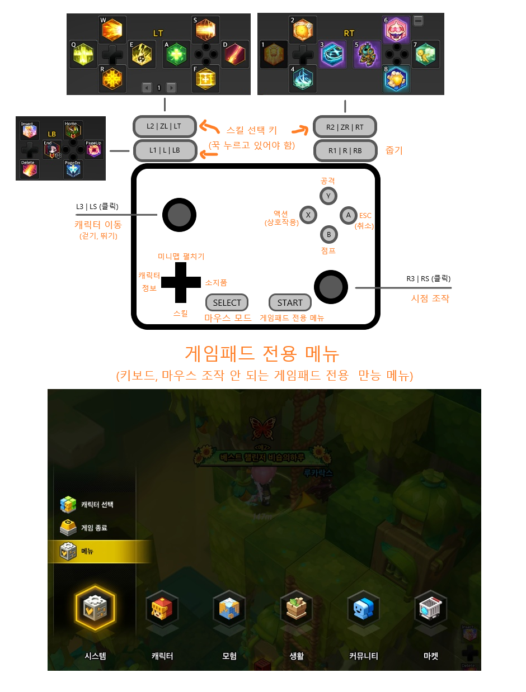

마지막 수정 : 2020.08.31 (현 시점의 마지막 게임 패치 : 2021.05.13)
인텔/AMD x86-64 CPU (1코어 클럭이 높은 CPU 권장, 예: i9-9700K)
Directx 9.0c 이상을 지원하는 그래픽카드
주의 1 : 메이플스토리2는 하나의 그래픽카드만 사용되며, 출력할 그래픽카드를 바꾸려면 게임을 종료해야 합니다.
주의 2 : 내장그래픽과 외장그래픽 동시 사용 시, 메인 그래픽카드로 내장그래픽 사용 시 내장그래픽으로 게임이 실행됩니다.
주의 3 : 게임을 렌더링하고 있는 그래픽카드가 사용 중지되는 경우(다중 그래픽카드 환경에서 사용할 화면 변경, 원격 세션 연결/끊어짐 등) 게임 화면이 정지된 상태가 됩니다.
4GB 이상 물리 RAM이 장착되어 있어야 함 (여유 할당공간 4.2GB ~ 7GB 권장, 최소 2.6GB 이상의 램 할당공간 필요)
약 32GB 이상의 여유 설치 저장 공간
(단, 이동식 디스크에 설치된 게임 데이터를 복사하여 무설치 + 레지스트리 등록 방식으로 이용하는 경우에는 이동식 디스크에만 약 15GB 이상의 저장공간이 필요함)
유/무선 인터넷(테더링 포함)
(5G 스마트폰에 탑재된 인터넷 테더링은 ipV6 문제로 게임 접속이 불가능합니다. 이 경우에는 ipV4로 직접 수동 변환하거나, 원격 컴퓨팅을 이용한 원격 접속 방식으로만 게임 플레이 가능)
3개 이상 동시 입력이 가능한 키보드(텐키리스 키보드 포함)
MIDI 장치 미지원
왼쪽 마우스 클릭, 오른쪽 마우스 클릭, 휠업, 휠다운이 가능한 마우스 또는 펜 타블렛 장치
(선택 요소)XBOX 컨트롤러와 레이아웃이 동일한 XInput 드라이버 지원 게임패드 (Geforce Game Streaming 비공식 지원)
Windows 7 SP3 Home Edition (인텔, AMD용)64비트 버전 이상(32비트 미지원)
※ Windows 10 ARM 21H2(x64 에뮬레이션 지원) 버전에서는 NGM 또는 넥슨플러그 실행 오류로 인하여 메이플스토리2 게임을 플레이할 수 없습니다. (프로그램 설치만 가능)※
※ 메이플스토리2 32비트 클라이언트는 2020년 3월 5일 이후로 더 이상 지원하지 않습니다. ※
Nexon Game Manager를 작동시킬 수 있는 웹 브라우저(Microsoft IE 11 or Edge, Google Chrome 등)
전체 이용가 게임이지만, 만 15세 이상
최소 매주 1시간 이상의 플레이 타임이 확보되어야 함 (매일 접속 권장)
수다 떨기, 캐릭터 꾸미기, 악기 연주(또는 작곡 채보)를 좋아하는 사람
이쁜 배경을 찍으며 노는 것을 좋아하는 사람
천천히 하면서 꾸준히 성장하고 싶은 사람
적당한 선에서 과금하면서 꾸준히 노력하여 강력한 사람이 되고 싶은 유저
남에게 비난하거나 불쾌한 말을 거는 것을 좋아하는 사람
(이 게임은 모든 유저가 매의 눈으로 채팅 상황을 지켜보고 있습니다)
저작권이나 자신의 신상정보를 사기치는 사람
(현실 활동까지 연결되는 게임 특성 상 커미션 사기꾼이나 넷카마(여성 유저인 척 하는 남성 플레이어) 하시면 바로 자발적 계정 영구정지 상태가 됩니다)
장사꾼, 구걸꾼
(장사와 구걸로 돈 버는 것이 거의 불가능하며, 상거래 활동으로 스펙업이 불가능한 게임입니다. 현금거래(시도) 적발 시 계정 영구정지 상태가 됩니다)
작업장(키보드 매크로를 적극 활용하고 싶은 유저 포함)
(작업장 방지 장치가 걸려있고, 모니터링 상태가 활발하여 작업장을 돌리기 거의 불가능합니다)
Pay 2 Win을 원하는 지갑전사
(핵과금 시 성장속도와 강해짐은 빠르지만, 현질로 아이템을 맞추는 것만으로는 강해질 수 없는 요소가 있습니다)
던전 돌이는 싫어하고 필드 사냥만 좋아하는 사람
(메이플스토리2는 레벨 업이 크게 의미가 없는 게임입니다. 필드 사냥을 좋아하는 사람은 메이플스토리 게임으로 돌아가세요)
2020.06.11 패치 기준
에픽 퀘스트를 클리어하세요.
1. 에픽 퀘스트를 플레이하세요.
※ 주의사항 : 이 구간의 에픽퀘스트는 아래 에픽퀘스트만 존재하니, 중간에 에픽 퀘스트가 끊기는 것은 지극히 정상입니다.
50레벨 :: 카르카르 아일랜드 에픽 퀘스트 (초기 대비 보상이 너프된 퀘스트)
50레벨 :: 스카이 포트리스 에픽 퀘스트
(에픽 퀘스트가 끊기는 시점)
56레벨 :: 스카이 포트리스(후속 퀘스트) - 불멸의 인페르녹
(에픽 퀘스트가 끊기는 시점)
60레벨 :: 프론티어 저택 관련 라펜샤드 에픽 퀘스트
60레벨 :: 프론티어 저택(후속 퀘스트) - 아이 오브 라펜타
(에픽 퀘스트가 끊기는 시점)
70레벨 :: 크리티아스 대륙 탐험
75레벨 :: 공중요새 투르칼리온 진입
75레벨 :: 최후의 결전, 투르카
75레벨 :: 여제의 침실
75레벨 :: 시공의 균열(블랙빈 등장 후에 더 이상 에픽 퀘스트가 없음)
2. 함선 임무를 수행하세요. (주간 퀘스트, 일일 퀘스트)
3. 모험 던전[어려움] - "불의 용" 던전(피로스 파드)을 파티로 10회 클리어하세요. (모험가 모집 이용)
4. 그래도 시간이 남으면 아래 맵에서 필드 몬스터 사냥을 권장합니다. (시간 좀 걸림)
52레벨 ~ 62레벨 :: 스코펠 기지, 룰루 마을, 쓸쓸한 벌판, 라이온 게이트
62레벨 ~ 98레벨 :: 시련의 관문 (2020.06.20 현재 경험치를 가장 많이 주는 사냥터)
대략적인 그림은 아래 게시글 참조!
(메이플스토리2 공략 게시판 링크) http://maplestory2.nexon.com/Kch/KnowhowView?sn=17299
길라잡이 탭에 있는 엘리트 어드벤처 세트(70Lv))를 착용하세요
(참고 : 2020년 7월 9일 패치로 파이어 프리즘 장비와 비슷한 성능을 내도록 능력치가 조정되었습니다.)
카오스 레이드 - 환영의 푸른 그림자 동굴[일반] 던전을 4번 돌아주세요. (최소 2판 이상 돌면 됩니다)
Tip : 혼자서 돌아도 충분한 던전입니다.
모험 던전(어려움) - 환영의 잊혀진 바야르 던전을 도세요.
그 이후는 추후에 작성하도록 하겠습니다.. 글 쓰기 귀찮아요!
유효 옵션의 장비 획득
유효 옵션 종류
(Tip 1 : 무기를 제외한 모든 장비는 "옵션 수치 변경권"을 얻을 수 있는 방법이 있으므로 옵션의 종류만 신경쓰면 된다)
(Tip 2 : 무기 장비는 "옵션 변경권"을 얻을 수 있는 방법이 있으므로 옵션의 종류에 상관없이 획득한 무기를 바로 사용하면 된다)
(Tip 3 : 무기를 제외한 모든 장비는 "옵션 종류"를 변경할 수 있으나, 옵션 종류를 변경하는 비용이 매우 비싸므로 가급적이면 유효 옵션이 있는 장비를 새로 확보하는 것을 권장합니다)
무기 (모든 옵션이 유효해야 함)
속성 대미지 증가, 총 대미지 증가, 물리 저항력 관통(또는 마법 저항력 관통), (비추천) 방어력 관통
모자, 상의 하의, 신발 (1옵션 이상 유효해야 함)
보스 공격력 증가
장갑 (1옵션 이상 유효해야 함)
물리 저항력 관통(또는 마법 저항력 관통)
목걸이, 반지, 귀고리 (모든 옵션이 유효해야 함)
보스 공격력 증가, 공격속도 증가, 크리티컬 대미지, 크리티컬 명중, (비추천) 방어력 관통
(참고 : 3옵션 이상 액세서리에서는 크크보(크리티컬 대미지, 크리티컬 명중, 보스 공격력 증가) 옵션을 가장 선호한다)
3소켓 액세서리 및 젬스톤
파괴의 젬스톤(10단계) 9개를 확보하여 70레벨 레전더리 이상 액세서리(3소켓)이나 블루 스톤 액세서리에 장착할 것을 권장합니다.
(파괴의 젬스톤 9개를 장착한 것과 장착하지 않은 것의 대미지 차이가 매우 큽니다.)
액세서리 파밍 순서
게오르크 카이 = 타이렌 로열 -> 블루 스톤 -> 파이어 프리즘 -> 크리스탈 샤인드
인챈트
너무나 기본적인 것이며, 재료가 되는대로 인챈트를 합시다.
라펜샤드
(초보자 캐릭터, 60레벨 이후 전직 퀘스트를 완료하지 않은 캐릭터는 라펜샤드 장착을 할 수 없습니다)
루미스톤
14캐릭터 생활작 말고는 답이 없습니다.
펫
1티어 : 이슈라 펫. (펫 자체에 보스 공격력 증가 옵션이 붙어 있음), 분노의 자쿰 펫
2티어 : 70레벨 레전더리 펫(70레벨 엑설런트 펫을 키워서 동일한 엑설런트 등급 펫 40마리를 먹여서 얻을 수 있습니다), 저주의 자쿰(적 방어력 감소)
3티어 : 50 ~ 60레벨 엘리트/엑설런트 유효 옵션 펫
(뉴비 유저라면 블랙마켓을 뒤져서 유효 옵션이 딸린 엘리트 펫을 구입하는 것을 매우 추천합니다. 심지어 펫 가격도 매우 저렴합니다)
펫 유효 옵션(아래 옵션 중에서 고르세요)
총 대미지 증가 (가장 좋은 옵션이며, "보스 공격력 증가" 옵션이 펫 옵션에는 없음)
크리티컬 대미지
크리티컬 명중
속성 대미지 증가
공격속도 증가
방어력 관통